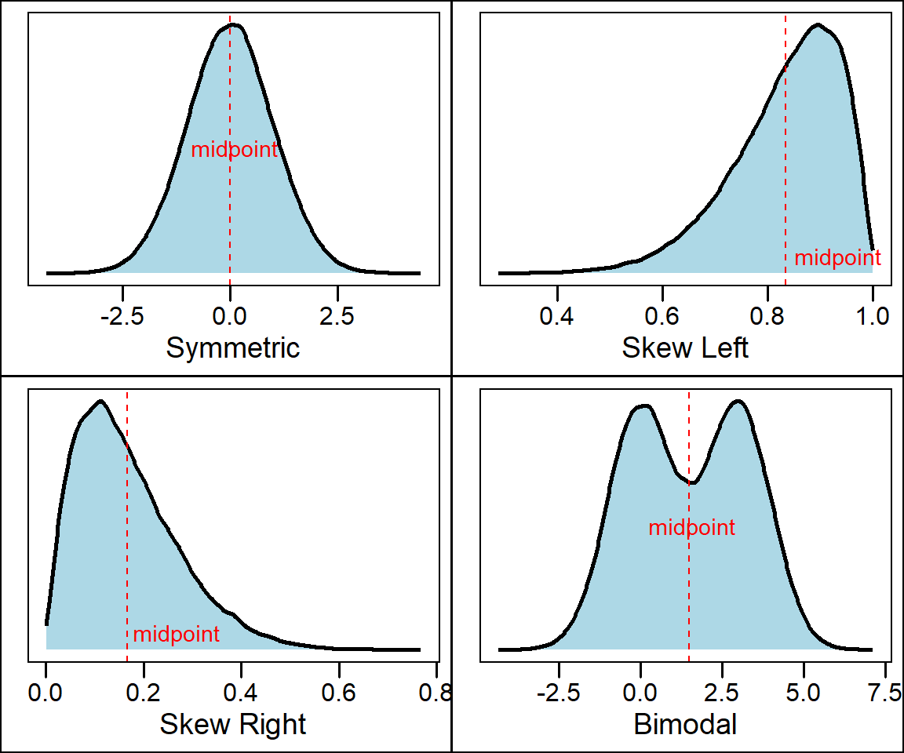
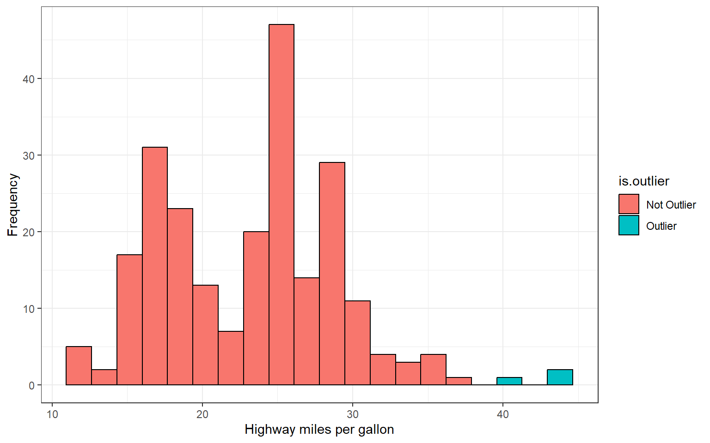
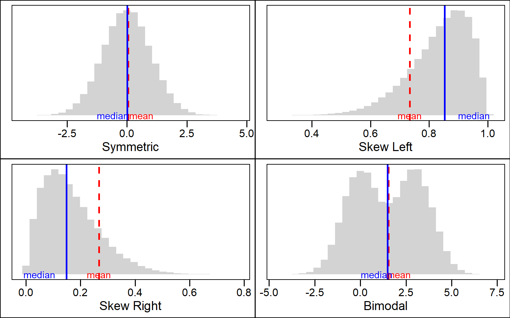

The purpose of a graph is to help us understand the data. Once the distribution of variable is plotted, you must ask yourself “what do I see?”. This is when were look for the features of a distribtuion such as shape, center and spread. This helps us to identify interesting patterns or potential outliers - individual data points that lie outside the normal pattern of the distribution.
One of the first things we can look for are peaks of the distribution. A peak indicates values that are more likely to occur called the mode. A distribution can have no peaks, one peak, or multiple peaks. A distribution with one peak is said to be unimodal, a distribution with two peaks is bimodal and a distribution with multiple peaks is multimodal.
| family | father | mother | midparentHeight | children | childNum | gender | childHeight |
|---|---|---|---|---|---|---|---|
| 001 | 78.5 | 67 | 75.43 | 4 | 1 | male | 73.2 |
| 001 | 78.5 | 67 | 75.43 | 4 | 2 | female | 69.2 |
| 001 | 78.5 | 67 | 75.43 | 4 | 3 | female | 69 |
| 001 | 78.5 | 67 | 75.43 | 4 | 4 | female | 69 |
| 002 | 75.5 | 66.5 | 73.66 | 4 | 1 | male | 73.5 |
| 002 | 75.5 | 66.5 | 73.66 | 4 | 2 | male | 72.5 |
| 002 | 75.5 | 66.5 | 73.66 | 4 | 3 | female | 65.5 |
| 002 | 75.5 | 66.5 | 73.66 | 4 | 4 | female | 65.5 |
| 003 | 75 | 64 | 72.06 | 2 | 1 | male | 71 |
| 003 | 75 | 64 | 72.06 | 2 | 2 | female | 68 |
| NA | \(\vdots\) | \(\vdots\) | \(\vdots\) | \(\vdots\) | \(\vdots\) | NA | \(\vdots\) |
| 204 | 62.5 | 63 | 65.27 | 2 | 2 | female | 57 |
Now consider the histogram for child height:
We can see from the histogram on the left that there are two clearly visible peaks. By coloring and segregating the bars according to gender we produce the histogram on the left which shows that the two peaks correspond to the gender of the children with males being about 10 inches taller on average.
Another question we may ask about the shape of a distribution is whether the distribution is symmetric or if it is skewed. A distribution is symmetric is the values that are smaller and larger than its midpoint are mirror images. A distribution is skewed right is the values larger than the midpoint form a long tail. Conversely, a distribution is skewed left if the values less than the midpoint form a long tail to the left

Many types of variables have distributions with predictable shapes. For example, variables that represent measurements of size from the same species and sex such as height, length, and age will have symmetric distributions. Variables related to money or finance on the other hand will often have skewed distributions. Skewness arises when there is a strict boundary on the values of a variable. For example, housing prices are always positive numbers and many houses will be a similar price while some houses many be really expensive. For example, consider the distribution of housing prices from the 1990 california housing census data downloaded from Kaggle
Lastly, one of the most important things a graphical summary of a variable can show is outliers. As previously noted, these are extreme values that fall far away from the normal pattern of the data. An outlier may be a result of measurement error or it can represent a real datapoint. Either way, outliers can strongly influence any analyses we conduct later on during statistical inference and are crucial to be aware of. Consider the following histogram of fuel efficiency (measured in miles per gallon) of several different car brands between 1999 and 2008 obtained from https://fueleconomy.gov/

How would you describe the shape of this distribution?
From the histogram we can see there are two bars that fall far to the right of the rest of the distribution. The observations comprising these bars constitute potential outliers. In fact, these three observations belong to the 1990 volkswagen beetle and jetta which was extremely fuel efficient for its time
Any description of the distribution of a variable is not complete without some numbers describing its center and spread. Previously, we learned how to describe shape by visually inspecting a graph of the data such as a histogram, stem plot, or dot plot. Now we will learn some statistics we can calculate that will tell us about spread and center. It’s important to note that we can calculate these descriptive statistics for any quantitative variables but NOT for qualitative variables. We will start by talking about statistics for quantifying the center of a distribution. Two measures of center are the mean and the median
The arithmetic mean (denoted \(\bar{x}\)) is the average value of a set of observations and tells us the center of mass or balancing point of a distribution \[\bar{x} = \sum_{i = 1}^n \frac{x_i}{n} = \frac{x_1 + x_2 + \cdots + x_n}{n}\]
The other measure of center is the median or middle value. To calculate the median, we must first arrange the data in order from least to greatest. If the number of observations \(n\) is odd then the median is exactly the middle value. If the number of observations \(n\) is even, then the median is the “average” of the two values in the middle.
Example: consider the following 8 observations of a quantiative variable \(X\): \[X = \{ 1, 3, 5, 5, 6, 7, 7, 8\}\] Compute the mean and median of \(X\)
\[\bar{x} = \frac{1+3+5+5+6+7+7+8}{8} = 5.25\]
\[\text{median} = \frac{5+6}{2} = 5.5\]
Now consider a the mean and median when we include the outlier observation \(X = 22\) and note it’s effect each statistic:
\[X = \{ 1, 3, 5, 5, 6, 7, 7, 8, 32\}\]
The mean becomes \[\bar{x} = \frac{1+3+5+5+6+7+7+8+32}{8} = 8.22\]
The median becomes \[\text{median} = 6\]
Notice that in the first set of calculations the mean was less than the median. Now, because of the presence of the outlier, the mean has surpassed the value of the median because the “weight” that the outlier carries in terms of its value.
 ### an alternative formula for the mean: We can also compute the mean using the frequency or relative frequency using the following formulas
Using the frequency \[\bar{x} = \sum_x \frac{x\times \text{freq}(x)}{n}\]
Using the relative frequency \[\bar{x} = \sum_x x \times rf(x) \]
Example: Sir Ronald Fisher’s famous iris data set gives the measurements in centimeters of the variables sepal length and width and petal length and width, respectively, for 50 flowers from each of 3 species of iris. Consider the following frequency table of petal lengths rounded to the nearest whole centimeter
| Petal Length (cm) | Frequency | Relative Frequency | Cumulative Relative Frequency |
|---|---|---|---|
| 1 | 24 | 0.16 | 0.16 |
| 2 | 26 | 0.17 | 0.33 |
| 5 | 3 | 0.02 | 0.35 |
| 4 | 34 | 0.23 | 0.58 |
| 3 | 35 | 0.23 | 0.81 |
| 6 | 24 | 0.16 | 0.97 |
| 7 | 4 | 0.03 | 1.00 |
We can compute the mean petal length using either of our formulas from above:
\[\bar{x} = \frac{1(24)+2(26)+5(3)+4(34)+3(35)+6(24)+7(4)}{150}\approx 3.76 \]
\[\bar{x} = 1(0.16)+2(0.17)+5(0.02)+4(0.23)+3(0.23)+6(0.16)+7(0.03)\approx 3.76\]